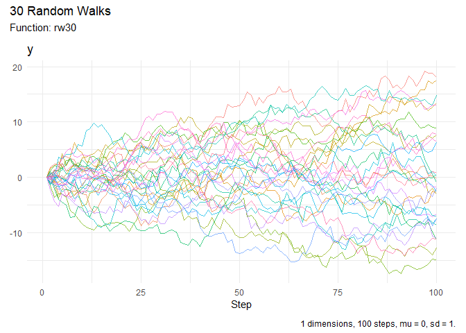
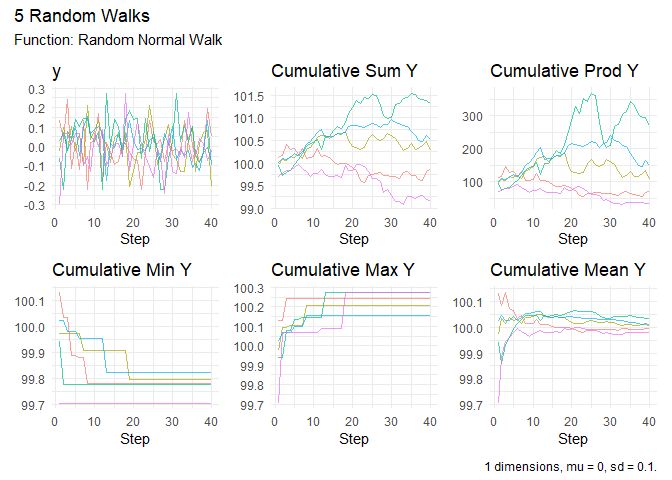

Generate random walks of various types with tidyverse compatibility
To view the full wiki, click here: Full RandomWalker Wiki
RandomWalker is a comprehensive R package that makes it easy to generate, visualize, and analyze random walks. Whether you’re modeling stock prices, simulating particle movements, or exploring stochastic processes, RandomWalker provides a unified, tidyverse-compatible interface with extensive distribution support.
✨ Key Features
- 🎲 27+ Distribution Types: Generate random walks from Normal, Brownian Motion, Geometric Brownian Motion, Cauchy, Beta, Gamma, Poisson, and many more distributions
- 📐 Multi-Dimensional Support: Create walks in 1D, 2D, or 3D space
- 📊 Rich Visualizations: Built-in plotting functions with support for both static and interactive visualizations
- 📈 Statistical Analysis: Comprehensive summary statistics including cumulative functions, confidence intervals, and distance metrics
- 🔧 Tidyverse Compatible: Works seamlessly with dplyr, tidyr, and ggplot2
- ⚡ Easy to Use: Sensible defaults with extensive customization options
📦 Installation
Install the stable version from CRAN:
install.packages("RandomWalker")Or get the development version from GitHub for the latest features and bug fixes:
# install.packages("devtools")
devtools::install_github("spsanderson/RandomWalker")🚀 Quick Start
Generate 30 Random Walks
The rw30() function provides a quick way to generate 30 random walks with 100 steps each:
library(RandomWalker)
# Generate random walks
walks <- rw30()
head(walks, 10)
#> # A tibble: 10 × 3
#> walk_number step_number y
#> <fct> <int> <dbl>
#> 1 1 1 0
#> 2 1 2 -0.315
#> 3 1 3 0.413
#> 4 1 4 -0.351
#> 5 1 5 -1.53
#> 6 1 6 -2.44
#> 7 1 7 -3.19
#> 8 1 8 -3.58
#> 9 1 9 -4.95
#> 10 1 10 -3.75Visualize Random Walks
Create beautiful visualizations with a single function call:
rw30() |>
visualize_walks()
Summarize Statistics
Get comprehensive statistical summaries of your random walks:
# Overall summary
rw30() |>
summarize_walks(.value = y)
#> # A tibble: 1 × 16
#> fns fns_name dimensions mean_val median range quantile_lo quantile_hi
#> <chr> <chr> <dbl> <dbl> <dbl> <dbl> <dbl> <dbl>
#> 1 rw30 Rw30 1 -0.624 -0.900 49.1 -13.9 18.7
#> # ℹ 8 more variables: variance <dbl>, sd <dbl>, min_val <dbl>, max_val <dbl>,
#> # harmonic_mean <dbl>, geometric_mean <dbl>, skewness <dbl>, kurtosis <dbl>
# Summary by walk
rw30() |>
summarize_walks(.value = y, .group_var = walk_number) |>
head(10)
#> # A tibble: 10 × 17
#> walk_number fns fns_name dimensions mean_val median range quantile_lo
#> <fct> <chr> <chr> <dbl> <dbl> <dbl> <dbl> <dbl>
#> 1 1 rw30 Rw30 1 3.88 3.90 10.6 -0.636
#> 2 2 rw30 Rw30 1 0.848 0.922 10.4 -3.85
#> 3 3 rw30 Rw30 1 3.32 3.09 10.2 -0.536
#> 4 4 rw30 Rw30 1 -3.40 -3.30 10.2 -7.30
#> 5 5 rw30 Rw30 1 7.28 7.04 13.7 1.10
#> 6 6 rw30 Rw30 1 -8.04 -9.73 19.2 -18.0
#> 7 7 rw30 Rw30 1 -2.50 -2.56 11.3 -6.96
#> 8 8 rw30 Rw30 1 -0.348 -0.426 7.21 -3.41
#> 9 9 rw30 Rw30 1 7.19 5.56 16.2 1.44
#> 10 10 rw30 Rw30 1 1.42 1.44 12.8 -4.34
#> # ℹ 9 more variables: quantile_hi <dbl>, variance <dbl>, sd <dbl>,
#> # min_val <dbl>, max_val <dbl>, harmonic_mean <dbl>, geometric_mean <dbl>,
#> # skewness <dbl>, kurtosis <dbl>🎯 Common Use Cases
1. Custom Random Walks with Specific Distributions
# Normal walk with custom parameters
random_normal_walk(
.num_walks = 5,
.n = 50,
.mu = 0,
.sd = 0.1,
.initial_value = 100
) |>
visualize_walks()
# Geometric Brownian Motion (great for stock prices!)
geometric_brownian_motion(
.num_walks = 10,
.n = 100,
.mu = 0.05,
.sigma = 0.2,
.initial_value = 100
) |>
visualize_walks()
2. Multi-Dimensional Random Walks
# 2D random walk
random_normal_walk(.num_walks = 3, .n = 100, .dimensions = 2) |>
head(10)
#> # A tibble: 10 × 14
#> walk_number step_number x y cum_sum_x cum_prod_x cum_min_x
#> <fct> <int> <dbl> <dbl> <dbl> <dbl> <dbl>
#> 1 1 1 0.0268 -0.0711 0.0268 0 0.0268
#> 2 1 2 0.0268 0.0582 0.0536 0 0.0268
#> 3 1 3 -0.195 -0.0251 -0.141 0 -0.195
#> 4 1 4 -0.0504 -0.148 -0.192 0 -0.195
#> 5 1 5 0.00382 0.0865 -0.188 0 -0.195
#> 6 1 6 0.131 0.139 -0.0567 0 -0.195
#> 7 1 7 0.0420 0.0549 -0.0148 0 -0.195
#> 8 1 8 0.0384 -0.0772 0.0236 0 -0.195
#> 9 1 9 -0.258 0.149 -0.234 0 -0.258
#> 10 1 10 -0.195 0.144 -0.429 0 -0.258
#> # ℹ 7 more variables: cum_max_x <dbl>, cum_mean_x <dbl>, cum_sum_y <dbl>,
#> # cum_prod_y <dbl>, cum_min_y <dbl>, cum_max_y <dbl>, cum_mean_y <dbl>
# 3D random walk
random_normal_walk(.num_walks = 2, .n = 50, .dimensions = 3) |>
head(10)
#> # A tibble: 10 × 20
#> walk_number step_number x y z cum_sum_x cum_prod_x
#> <fct> <int> <dbl> <dbl> <dbl> <dbl> <dbl>
#> 1 1 1 0.190 0.147 0.0425 0.190 0
#> 2 1 2 -0.0333 -0.0159 0.0287 0.157 0
#> 3 1 3 0.124 -0.0312 0.0523 0.281 0
#> 4 1 4 -0.0133 -0.00990 -0.0491 0.267 0
#> 5 1 5 0.0863 -0.0759 -0.106 0.354 0
#> 6 1 6 -0.0173 -0.0564 0.0971 0.336 0
#> 7 1 7 0.0345 -0.0564 -0.0301 0.371 0
#> 8 1 8 0.0345 0.222 0.108 0.405 0
#> 9 1 9 -0.0566 -0.0325 0.0971 0.349 0
#> 10 1 10 0.104 0.199 0.123 0.453 0
#> # ℹ 13 more variables: cum_min_x <dbl>, cum_max_x <dbl>, cum_mean_x <dbl>,
#> # cum_sum_y <dbl>, cum_prod_y <dbl>, cum_min_y <dbl>, cum_max_y <dbl>,
#> # cum_mean_y <dbl>, cum_sum_z <dbl>, cum_prod_z <dbl>, cum_min_z <dbl>,
#> # cum_max_z <dbl>, cum_mean_z <dbl>3. Discrete Random Walks
# Discrete walk with upper/lower bounds
discrete_walk(
.num_walks = 5,
.n = 100,
.upper_bound = 1,
.lower_bound = -1,
.upper_probability = 0.55,
.initial_value = 0
) |>
visualize_walks()
📚 Available Random Walk Types
RandomWalker supports a wide variety of random walk types:
Continuous Distributions
-
Normal:
random_normal_walk(),random_normal_drift_walk() -
Brownian Motion:
brownian_motion(),geometric_brownian_motion() -
Beta:
random_beta_walk() -
Cauchy:
random_cauchy_walk() -
Chi-Squared:
random_chisquared_walk() -
Exponential:
random_exponential_walk() -
F-Distribution:
random_f_walk() -
Gamma:
random_gamma_walk() -
Log-Normal:
random_lognormal_walk() -
Logistic:
random_logistic_walk() -
Student’s t:
random_t_walk() -
Uniform:
random_uniform_walk() -
Weibull:
random_weibull_walk() - And more!
Discrete Distributions
-
Binomial:
random_binomial_walk() -
Discrete:
discrete_walk() -
Geometric:
random_geometric_walk() -
Hypergeometric:
random_hypergeometric_walk() -
Multinomial:
random_multinomial_walk() -
Negative Binomial:
random_negbinomial_walk() -
Poisson:
random_poisson_walk()
Custom Walks
-
Custom Displacement:
custom_walk(),random_displacement_walk()
🛠️ Key Functions
| Function | Description |
|---|---|
rw30() |
Quickly generate 30 random walks |
visualize_walks() |
Create visualizations (static or interactive) |
summarize_walks() |
Generate comprehensive statistics |
subset_walks() |
Subset walks by max/min values |
euclidean_distance() |
Calculate distances in multi-dimensional walks |
confidence_interval() |
Compute confidence intervals |
running_quantile() |
Calculate running quantiles |
📖 Documentation
-
Getting Started Guide: See
vignette("getting-started") - Function Reference: Online Documentation
- Package Website: RandomWalker
- News and Updates: Check NEWS.md for latest changes
🤝 Contributing
Contributions are welcome! Please feel free to submit a Pull Request. For major changes, please open an issue first to discuss what you would like to change.
📄 License
This package is licensed under the MIT License. See LICENSE.md for details.
👥 Authors
- Steven P. Sanderson II, MPH - Author, Creator, Maintainer - GitHub
- Antti Rask - Contributor - Visualization functions
📞 Getting Help
- Bug Reports: GitHub Issues
-
Questions: Use GitHub Discussions or Stack Overflow with the
randomwalkertag - Website: https://www.spsanderson.com/RandomWalker/
🌟 Citation
If you use RandomWalker in your research, please cite:
citation("RandomWalker")Made with ❤️ for the R community